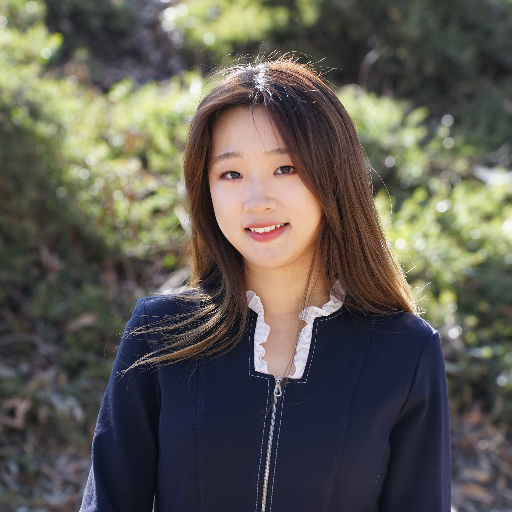
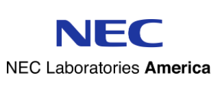

|
Zexue He
I'm a Postdoc Fellow at Human-Centered AI Institude (HAI) in Stanford University, working with Alex 'Sandy' Pentland and Yejin Choi .
I recieved my Ph.D. in Computer Science and Engineering department at University of California, San Diego, advised by Prof. Julian McAuley, and was honored to be awarded the IBM PhD Fellowship in 2022.
I previously spent two years as a Research Scientist at the MIT-IBM Lab , responsible for long-context efficiency and post training (safety and alignment) of IBM's foundation models (Granite Vision Series). I also worked as an intern at the Microsoft Research and Google.
Contact: zexueh [AT] stanford.edu | zehe [AT] ucsd.edu
Full Publications: Google Scholar
|

|
Research Highlights
|
My research builds long-context foundation models (LLMs/VLMs) and long-horizon agents that can reliably reason and act over extended contexts.
I push the capability frontier of LLMs via scalable synthetic data methods and modeling and training approaches,
|
|
News
- [7/2026]: I'm organizing the Third Workshop on Long-Context Foundation Models at NeurIPS 2026 at Atlanta.
- [4/2026]: 3 papers accepted to ICML 2026!
- [4/2026]: Invited talk on From Remembering to Acting: Memory for Long-Horizon Agents at Harvard University. Thanks for inviting me.
- [3/2026]: Gates Foundation Workshop on Future of Personal AI: Global Portable Memory Workshop in Seattle.
- [2/2026]: I'm co-organizing the first workshop on Emerging Directions in Data for Multimodal Foundation Models at CVPR 2026.
- [1/2026]: 3 papers accepted to ICLR 2026!
- [7/2025]: I'm organizing the second workshop on Long-Context Foundation Models at ICML 2025.
- [4/2025]: Invited panlist on New Frontiers in Associative Memories Workshop at ICLR 2025.
- [4/2025]: Invited talk on Safe AI and NLP for High-Stakes Human-Centric Tasks at Yale.
- [3/2025]: Invited talk on Trustworthy AI for High-Stakes Human-Centric Tasks at UMiami.
- [1/2025]: Invited talk on Responsible AI for High-Stakes Human-Centric Domains at Tufts.
- [1/2025]: Invited talk on Responsible and Trustworthy AI at UCLA.
- [11/2024] : Invited talk on Responsible AI for Human-centered Challenges at MIT.
- [10/2024]: Talk on Trustworthy GenAI at UCSD CSE.
|
* = Equal contribution/core contributor. Last author = corresponding author, also as core contributor as first author (who usually is my mentee).
Education
Postdoc 2025 - present
Human-Centered AI Institute (HAI), Stanford University, U.S.
Postdoc Fellow in HAI
Advisors: Prof. Alex 'Sandy' Pentland, and Prof. Yejin Choi
|
|
Ph.D. 2020 - 2024
Computer Science and Engineering, University of California San Diego (UCSD), U.S.
Ph.D. student in Computer Science
Advisor: Prof. Julian McAuley
Committee: Prof. Taylor Berg-Kirkpatrick, Prof. Jingbo Shang, Prof. Zhiting Hu
|
|
B.S. 2015 - 2019
College of Information Science and Technology, Beijing Normal University (BNU), China
B.S. in Computer Science and Technology
|
|
|
Work Experience
MIT-IBM AI Lab, Cambridge, MA
Research Scientist (Prev. Research Intern) • summer 2023 - till now
• Memory-augmented Foundation Models for Efficient Long-Context Modeling
Collaborator: Dr. Dmitry Krotov at MIT-IBM
PI: Prof. Yoon Kim at MIT;
Prof. Donghyun Kim at Korea University
Dr. Leonid Karlinsky and Dr. Rogerio Feris at MIT-IBM
• Foundation Models -- LLM Alignment and Reasoning
Collaborator: Maohao Shen at MIT
PI: Prof.Gregory Wornell at MIT;
Dr. Subhro Das at MIT-IBM
|
|
Microsoft, Redmond, Washington
Research Intern • summer 2022
Targeted Data Generation
Advisor: Dr. Fereshte Khani Prof. Marco Tulio Ribeiro
Office of Applied Research
|
|
NEC Labs, Princeton, NJ
Research Intern • June. 2021 to Sept. 2021
Multimodality Data Representation Learning
Advisor: Dr. Yuncong Chen
Data Science & System Security Group
|

|
Microsoft Research Asia, Beijing, China
Research Intern • Oct. 2019 to Dec. 2019
Algorithmic Trading: High-Frequency Time Series Machine Learning and Data Mining
Advisor: Dr. Kan Ren
Machine Learning Group
|
|
Google, Beijing, China
Engineering Practicum Intern • Jul. 2017 to Sept. 2017
Knowledge Graph Source Discovery: Wikipedia-like Sites Discovery and Analysis
Advisor: Jiang Bian, team manager
Dataz Group
|
|
|
Research Experiences
Machine Learning Department, Carnegie Mellon University, Pittsburgh, U.S.
Research Intern • Apr. 2018 to Oct. 2018
Robust Learning for Domain Generalization (DG) without Domain Information
Mentor: Haohan Wang, Ph.D. candidate at LTI, CMU
Advisors: Prof. Zachary C. Lipton.
|

|
Information Retrieval Group, Tsinghua University, Beijing, China
Research Assistant • Jun. 2017 to May 2018
Investigating Human Examination Behavior on Mobile Search
Advisor: Prof. Yiqun Liu
|
|
Key Laboratory of Computational Linguistic, Peking University, Beijing, China
Research Assistant • Dec. 2017 to May 2018
Leveraging Gloss Knowledge in Neural Word Sense Disambiguation (WSD)
Chinese Word Segmentation (CWS) with Character Glyph Embedding
Advisor: Prof. Baobao Chang
|

|
Engineering Research Center of Virtual Reality and Applications, Beijing Normal University, Beijing, China
Research Assistant • Jul. 2017 to Feb. 2017
Human Brain's CT-MRI Heterogeneous Data Fusion and Visualization
Advisor: Prof. Yanlin Luo
|
|
School of Life Science, Beijing Normal University, Beijing, China
Research Assistant • Nov. 2015 to Sept. 2017
Genetic Biological Parallel Computing System for NP-hard Problems
Advisor: Prof. Xudong Zhu
|
|
Scholarships
UCSD Chancellor's Dissertation Medal (Finalist)
• 2025 • UCSD
IBM Ph.D. Fellowship
• 2022-2024 • IBM
TwoSigma Ph.D. Fellowship Final Nomination
• 2022-2024 • TwoSigma
Jacobs School of Engineering Fellowship
• 2020-2021 • University of California San Diego
The First-class Scholarship for Academic Excellence
• 2018 • Beijing Normal University
The First-class Scholarship for Competition Excellence
• 2016, 2017, 2018 • Beijing Normal University
Google Intern Scholarship
• 2017 • Google Inc.
Gold Medal in International Genetically Engineered Machine Competition (iGEM) at Boston, Massachusetts, U.S.
• 2016
Silver Medal in International Collegiate Programming Contest at Beijing regional site (ACM/ICPC, Beijing)
• 2016
Bronze Medal in International Collegiate Programming Contest at Dalian regional site (ACM/ICPC, Dalian)
• 2016
Best Female Team in China Collegiate Programming Final Contest (CCPC Final)
• 2016
|
|